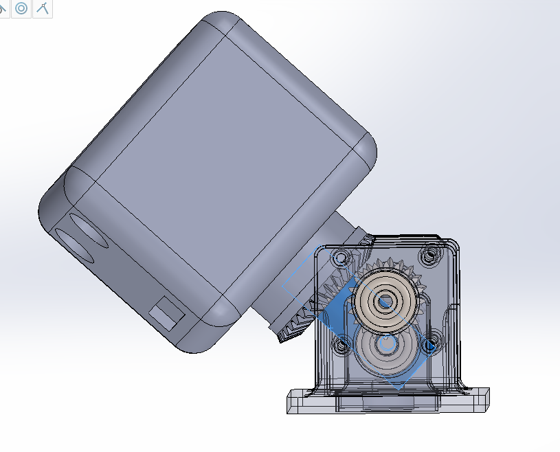
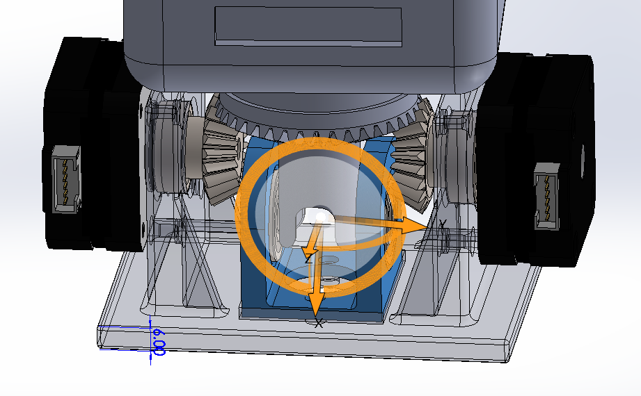
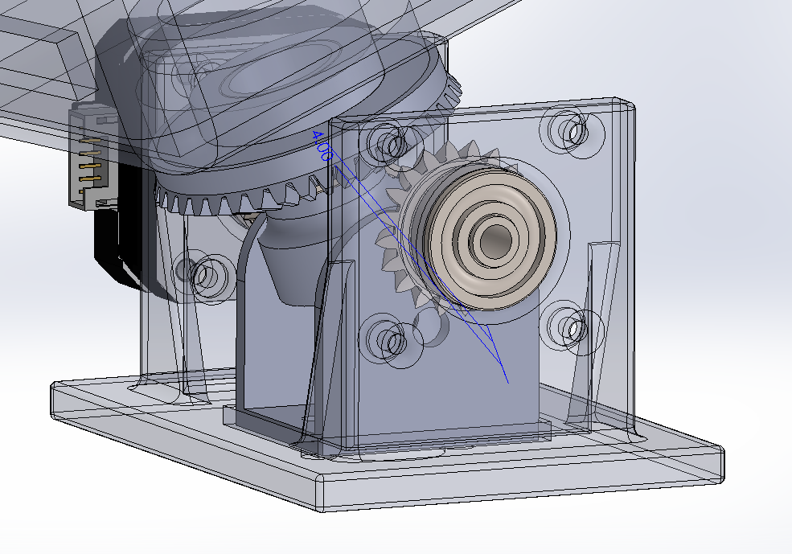
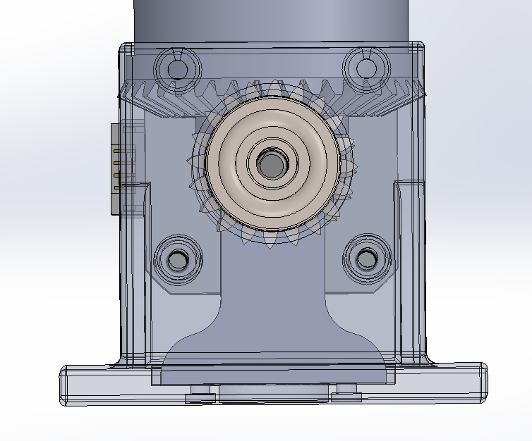
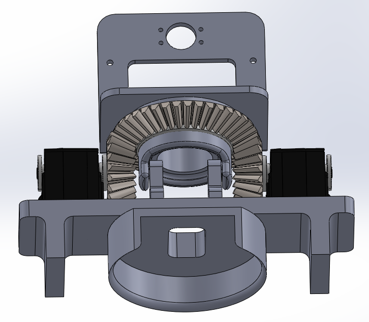
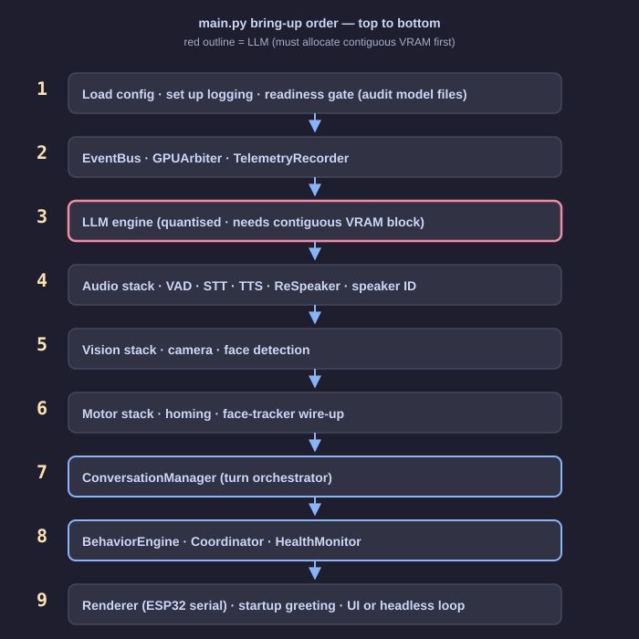

URex: An Expressive Multimodal AI Companion


Abstract
URex is an expressive companion robot built around a mechanically novel two-degree-of-freedom head and a locally-hosted multimodal AI stack. A pair of Feetech ST3215 smart serial servos drive a differential bevel gearbox that produces pan and tilt from two simultaneous motor inputs; a 2.8″ ESP32 touchscreen renders an affect-driven face synchronised with lip movements; a CSI camera and a 4-microphone array feed a conversation loop that transcribes speech, reasons with a quantised language model, and speaks back through a neural TTS — all on a Jetson Orin Nano with 8 GB of unified memory, with no cloud dependency.
This report documents the mechanical iteration history that converged on the working head, the differential-bevel kinematics and calibration procedure, the integrated perception and conversation pipelines, and the runtime architecture that keeps the system responsive. It ends with an honest discussion of the memory constraints that shaped the shipped integration — in particular the downgrade from a multimodal to a text-only language model and the fact that the affect-perception subsystem, while verified in isolation, does not run concurrently with the voice loop on the current budget — and a forward-looking roadmap for the capabilities that follow once additional headroom is available.
1. Introduction
Affective embodied robots occupy a well-studied niche in human-robot interaction research. Commercial and clinical precedents — PARO as a tactile therapeutic seal, LivingAI EMO as an expressive desk robot, and Qoobo as a motion-only companion — all make the same observation: a physical body, even a small one, that orients toward a person and responds with visible state is disproportionately effective at conveying presence and attention. Cloud voice assistants without bodies do not reliably produce the same effect.
Most of those commercial systems either rely on a cloud backend for any non-trivial language capability, or narrow their interaction to a single modality (touch only, motion only). A platform that combines physical expressivity with full multi-turn conversation and perception, all hosted on device, is still an open engineering problem — particularly on consumer-grade edge hardware where memory budgets are measured in single-digit gigabytes.
URex is built to that gap. The system fuses a 2-DOF expressive head, a rendered touchscreen face, and a full voice-interaction pipeline — listening, reasoning, and speaking — into a single device that runs entirely offline on a Jetson Orin Nano 8 GB. The mechanical head, based on a differential bevel gearbox, is the main novel physical contribution. The software is a tightly-integrated assembly of open source models (Silero VAD, Parakeet TDT, Llama 3.2, Piper) wrapped in a turn-oriented state machine, an event bus, and a GPU arbiter that cooperatively share a single board's unified memory.
The rest of this report describes, in order: the related work that motivated the design (§2), the system as a whole (§3), the mechanical iteration story that produced the working head (§4), the kinematics (§5), the low-level servo bus lessons (§6), the perception stack (§7), the conversation and LLM stack (§8), the runtime infrastructure (§9), the face and GUI (§10), the testing strategy (§11), and a chapter — the most important one for anyone evaluating the final build — on the 8 GB memory budget and the decisions it forced (§12). A forward-looking future-work list (§13) and a short conclusion (§14) close the report.
2. Background and related work
2.1 Affective companion robots
The design space for affective companions clusters around three archetypes worth calling out, because each one emphasises a different communication channel and the URex design takes something from each.
| Reference | Primary channel | Role in therapy / companionship | Relevance to URex |
|---|---|---|---|
| PARO (Japan, AIST) | Tactile, plush form, subtle motion and sound | Validated clinical companion for dementia care; reduces agitation and isolation. | Establishes that a small embodied presence is effective; motivates the head-first design decision. |
| LivingAI EMO | Expressive motion + animated eyes on a screen face | Consumer desk companion; personality driven by micro-movements and eye state. | Closest to URex's face-plus-head combination; validates the eye/face-on-screen approach. |
| Qoobo | Motion only (a tail) | Companion for people who cannot keep real pets. | Demonstrates that a single expressive degree of freedom, well-controlled, carries presence. |
2.2 Expressive motion as a channel
Head orientation is one of the most economical perceptual cues humans have for judging attention. An embodied system that simply looks at you when you speak is read as attentive in a way that static rendering is not. URex places that single cue — a two-DOF head that orients toward a detected face — at the centre of its physical expressivity, and augments it with a screen face whose state (valence, arousal, listening / thinking / speaking) changes in response to the conversation.
2.3 Edge multimodal AI
The class of always-on multimodal AI stacks — wake-less voice activity detection, local ASR, local LLM reasoning, local neural TTS, local vision — has only recently become feasible on 8 GB-class edge SoCs, driven by 4-bit quantisation (llama.cpp's GGUF format), ONNX-optimised STT (Parakeet TDT), and lightweight neural vocoders (Piper, Kokoro). Running the whole loop on device matters for privacy (a companion robot should not stream raw audio to a cloud provider) and for latency (sub-second turn response needs tight local coupling, not a round trip through the internet).
The Jetson Orin Nano 8 GB is a viable platform for this class of system — but a tight one. Chapter 12 explains in detail how that budget shapes which of these models actually co-exist at runtime.
2.4 Credits
URex integrates, and is grateful to, the following open-source projects: llama.cpp (quantised LLM inference), Parakeet TDT (NVIDIA ASR, ONNX export), Silero VAD (voice activity detection), Piper and Kokoro (neural TTS), YOLO26n-pose (person keypoints), HSEmotion (facial emotion classifier, used standalone), TFT_eSPI (ESP32 display driver), Rhubarb (viseme-from-PCM), Mem0 and Chroma (persistent memory), and LiveKit EOU (semantic end-of-utterance).
3. System overview
3.1 Hardware components
- Jetson Orin Nano 8 GB — compute (CPU + GPU on unified memory, JetPack 6).
- ReSpeaker 4-mic USB array — audio input and direction-of-arrival estimation; XMOS XVF-3800 DSP with a 12-LED ring.
- IMX219 CSI camera — vision input; 640 × 480 @ 30 fps operating resolution.
- Diymore 2.8″ ESP32 TFT with ILI9341 display, XPT2046 resistive touch, and CH340 USB-serial — renders the face and provides tap input.
- 2× Feetech ST3215 smart serial servos — head actuation, mirror-mounted with 20-tooth bevel pinions.
- Waveshare CH343 USB-serial bus adapter — 1 Mbaud half-duplex Feetech bus to the servos.
- USB speaker — TTS output via
aplay. - 3D-printed PLA mount — holds the gearbox, the head, and the sensors.

3.2 Software layers

main.py wires everything together in the bring-up order shown in §9.3.3 Subsystem index
| Subsystem | Path | Purpose | Status |
|---|---|---|---|
| Audio I/O | companion/audio/io.py | Mic capture, speaker streaming. | integrated |
| Voice activity detection | companion/audio/vad.py | Silero v5 ONNX VAD + turn-taking state. | integrated |
| Speech-to-text | companion/audio/stt.py | Parakeet TDT (primary), Whisper (fallback). | integrated |
| Text-to-speech | companion/audio/tts.py | Piper (CPU default), Kokoro (alt). | integrated |
| ReSpeaker DOA | companion/audio/respeaker.py | USB HID control, DOA, LEDs. | integrated |
| Barge-in | companion/audio/barge_in.py | Discriminates real user speech from TTS bleed. | integrated |
| Camera | companion/vision/camera.py | CSI capture via GStreamer. | integrated |
| Face detection | companion/vision/face_detector.py | YOLO26n-pose keypoints → face bbox. | integrated |
| Face tracker | companion/vision/face_tracker.py | Head-servo control from face position. | integrated |
| Emotion classifier | companion/vision/emotion_classifier.py | HSEmotion 8-class + valence/arousal. | verified standalone |
| LLM engine | companion/llm/engine.py | llama-cpp-python, quantised inference. | integrated (text-only) |
| Motor controller | companion/motor/controller.py | ST3215 bus, telemetry poll, safety. | integrated |
| Kinematics | companion/motor/kinematics.py | Differential-bevel FK / IK. | integrated |
| Calibration wizard | companion/ui/calibration_window.py | 9-step Qt bring-up wizard. | integrated |
| ESP32 face | firmware/companion_face/ | Local TFT render of face and menus. | integrated |
| Conversation manager | companion/conversation/manager.py | Turn lifecycle, state transitions. | integrated |
| Event bus | companion/core/event_bus.py | Async pub/sub. | integrated |
| GPU arbiter | companion/core/gpu_arbiter.py | Realtime vs background GPU lock. | integrated |
| Health monitor | companion/core/health.py | Watchdog for mic / camera / motors. | integrated |
| Telemetry | companion/core/telemetry.py | Per-turn JSONL traces. | integrated |
| Scene captioning (VLM) | companion/vision/scene_watcher.py | Needs multimodal LLM. | deferred |
| Persistent memory | companion/llm/memory.py | Mem0 + Chroma per-speaker store. | deferred |
4. Mechanical design and iteration history
The head mechanism — a two-motor differential bevel pan/tilt — was iterated through six CAD revisions before it functioned reliably. Each revision exposed a new failure mode; the descriptions below document what was broken and what was fixed at each step. The figures are the exact CAD renders used during design review.
4.1 Original concept

4.2 Prototype 1 — too large a footprint

4.3 Prototype 2 — cable routing collides with the servo body


4.4 Prototype 3 — parts sectioned for printing and assembly


4.5 Prototype 4 — gear disengages from an unaligned pivot


4.6 Prototype 5 — pivot relocated onto the crown axis


4.7 Final CAD assembly



4.8 Full assembled prototype
The two photographs below are the physical realisation of the final CAD: 3D-printed PLA mount, 40-tooth crown and 20-tooth pinions visible under the head, two ST3215 servos mirror-mounted with cable exits routed to the rear, a CSI ribbon running up to the camera taped at the top of the head, and the Diymore 2.8″ TFT screen rendering the face. The two face states demonstrate the display subsystem (§10) responding to affect commands from the conversation layer.
[affect: happy] tag from the LLM reply.4.9 Lessons
| Issue | Iteration where it surfaced | Resolution |
|---|---|---|
| Form factor oversized | P1 | Tighten envelope to motor + gearbox + head payload only. |
| Cable exit clashes with gear sweep | P2 | Route cables behind servo bodies; leave clearance in the mount. |
| Unprintable monolithic geometry | P2 → P3 | Section into two halves along a plane that respects tooth-load direction. |
| Tilt pivot not concentric with bevel crown | P4 | Move the pivot into the plane of the gear mesh (P5). |
| Head payload off-axis causes sag | Final | Cantilever the TFT + camera with CoM close to the pivot. |
5. Kinematics
The head mechanism is a classical two-input bevel differential. Two Feetech ST3215 smart serial servos, mirror-mounted, each drive a 20-tooth bevel pinion. Both pinions mesh with a single 40-tooth crown bevel gear that carries the head. The gear reduction is therefore G = 40 / 20 = 2.0: one full revolution of the crown requires two revolutions of each pinion.
Because the pinions mesh with opposite sides of the crown, their rotations combine differentially: when both motors rotate in the same direction, the crown pitches (tilt); when they rotate in opposite directions, the crown yaws (pan). The two degrees of freedom the user cares about — pan and tilt — are therefore obtained by mixing the two motor inputs, not by driving separate axes.

repo/companion/motor/kinematics.py.5.1 Forward and inverse equations
Let θL and θR denote left and right motor-shaft rotations (in radians, relative to calibrated zero), and let p and q denote head tilt and pan. The mapping is:
The ST3215 has a 4096-tick single-turn magnetic absolute encoder, so the conversion between ticks and radians is straightforward:
5.2 Inverse pipeline — user pose to motor ticks
The integrated path that turns a (pan, tilt) command into a pair of servo tick setpoints is a sequence of five stages, implemented in repo/companion/motor/kinematics.py:41-67.

config.yaml → motor:; calibration fills in the parameters.- Clamp the commanded pan and tilt to the soft limits (
pan_limits_deg,tilt_limits_deg) so the controller never commands past a mechanical stop. - Axis inversion: flip pan or tilt sign if the calibrated
invert_pan/invert_tiltflags say so. - Solve the inverse: θL = G·(pitch + pan), θR = G·(pitch − pan).
- Per-motor direction sign: because the servos are mirror-mounted, one of them runs positive-forward and the other negative-forward.
left_directionandright_directionare ±1 and are set during calibration. - Zero-tick offset: add the calibrated centre position (
left_zero_tick,right_zero_tick) so the output is an absolute encoder setpoint.
The two tick values are written atomically to the servos using Feetech's GroupSyncWrite, and both are given the same GOAL_TIME so they complete the commanded motion in the same time window — an essential detail for pure-pan commands, where an unbalanced completion time causes a transient tilt.
5.3 Calibration wizard
Every mechanical unit's calibration parameters — zero ticks, motor direction, gear ratio, axis inversion, soft limits — are measured once through a nine-page Qt wizard (repo/companion/ui/calibration_window.py, launched by python -m companion.motor.cli calibrate). Each page captures one value and writes it back to config.yaml at the end.
| Step | What it does | Output |
|---|---|---|
| 1. Connect | Open the Feetech bus, ping both servo IDs. | connection confirmed |
| 2. Direction | Jog each motor ±5° independently, user confirms direction. | left_direction, right_direction |
| 3. Rough zero | Torque off; user hand-holds the head at centre + level; capture ticks. | rough *_zero_tick |
| 4. Combined sanity | Command pan/tilt presets, toggle axis inversions if needed. | invert_pan, invert_tilt |
| 5. Limits | Step-jog to each mechanical stop, mark the tick. | limit ticks per axis |
| 6. Refine zeros | Pan zero = midpoint of limits; tilt zero from phone-level reading. | refined zeros, symmetric limits |
| 7. Gear ratio | Command a known motor delta, measure actual head angle. | gear_ratio_measured |
| 8. Verify | Live 3D sphere preview + sliders; right-drag to move the head. | visual confirmation |
| 9. Save | Write every value back to config.yaml → motor:. | persisted calibration |
5.4 Currently-persisted calibration
Lifted directly from the repository's config.yaml:
motor:
left_zero_tick: 2514
right_zero_tick: 2594
left_direction: +1
right_direction: −1
gear_ratio_measured: 2
backlash_deg: 1
invert_pan: false
invert_tilt: false
pan_limits_deg: [−37.9683, +37.9683]
tilt_limits_deg: [ −8.0635, +8.0635]5.5 The wizard in action

5.6 Live demonstration

set_head_pose command and the telemetry stream that confirms completion. The closed loop is: slider → inverse kinematics → GroupSyncWrite to both servos → shared GOAL_TIME → forward kinematics computed from the encoder readback → 3D preview update.5.7 Safety systems
- Thermal cutoff.
HeadController._check_temperaturepolls each servo at 30 Hz and disables torque if the case temperature exceeds 65 °C (motor.max_temperature_c). - Stall detection. If either motor's position error exceeds 30 ticks (about 1.3° at the head) for more than 1.5 s, the controller overwrites the goal with the current actual position: the servo stops pushing but still holds against gravity. See
motor.stall_position_error_ticksandstall_timeout_s. - GOAL_TIME synchronisation. The verify page and the face-tracker both issue commands with a shared 150 ms
GOAL_TIME. Without this, a pure pan (equal and opposite motor deltas) transiently tilts when one motor finishes before the other.
6. Servo bus lessons
The Feetech ST3215 is a capable smart serial servo, but a few of its protocol and firmware quirks cost real debugging time and are worth documenting for anyone reading the low-level bus code (repo/companion/motor/bus.py).
-
scservo_sdkendianness. The STS / SMS-series (which the ST3215 belongs to) requiresPacketHandler(0)— little-endian. The wrong value silently byte-swaps every 2-byte register read and write; the symptom is that written values look correct on readback (symmetric swap) but the firmware internally sees transposed values. This manifests as seemingly inexplicable register behaviour (e.g. servos running in multi-turn mode after you explicitly wrote a single-turn range). -
EEPROM lock and write timing. Register 55 (
LOCK) defaults to 1 on power-up. EEPROM writes (includingID, angle limits, mode, offsets) only persist across a power cycle if the lock is cleared first and re-asserted after. Commits take roughly 10 ms to land; back-to-back writes need at least a 30 ms sleep, and the bus code retries on the-6"corrupt reply" error that a fast retry elicits. -
Clamping
GOAL_POSITIONis wrong in multi-turn mode. If a servo is inadvertently left in multi-turn mode (e.g. factory default withMIN_ANGLE_LIMIT = MAX_ANGLE_LIMIT = 0), writing a goal clamped to[0, 4095]causes the servo to unwind through multiple turns to reach that absolute position. The bring-upset-single-turncommand explicitly forcesMIN = 0, MAX = 4095, MODE = 0to prevent this. -
GOAL_TIMEsynchronises two-motor moves. When both motors share aGOAL_TIME(registers 44–45), they reach the target in the same time window regardless of how far each one has to travel. This eliminates the transient cross-axis jitter that otherwise appears during pure-pan commands.
7. Perception subsystems
URex's perception stack has two branches: an audio branch that drives turn-taking and conversation, and a vision branch that drives face tracking. Both are always running; both report into the ConversationManager and the face-tracker respectively.
7.1 Audio pipeline

Capture — repo/companion/audio/io.py
AudioInput opens the ReSpeaker as a 16 kHz mono PyAudio stream (with an arecord subprocess fallback for environments where PyAudio's stream configuration fails). It yields 512-sample (32 ms) chunks — Silero VAD's native input size. A health-monitored watchdog flags the input as starved if no chunk arrives for two seconds, which surfaces to HealthMonitor and the TTS user-facing status.
ReSpeaker direction of arrival — repo/companion/audio/respeaker.py
The 4-microphone array is interrogated over USB HID using XMOS's vendor control-transfer protocol. DOA is polled at 10 Hz and, together with the face-detector output, drives the conversation-engagement gate: the robot only engages when the user's voice direction matches the face's on-camera direction. LED feedback (12-RGB ring) is driven by the same module. The current calibrated offset is doa_offset_deg = -93.48 (set once via the audio calibration tab).
Voice activity detection — repo/companion/audio/vad.py
Silero VAD v5 runs as an ONNX session in CPU mode (see §12 for why). Threshold is 0.35, tuned for the ReSpeaker's level profile. A lightweight state machine (IDLE → SPEECH_START → SPEAKING → SPEECH_END) calls back into the ConversationManager at the two transition points.
Speech-to-text — repo/companion/audio/stt.py
Parakeet TDT 0.6B v3 is the primary backend, run as an ONNX graph on CUDA. The ONNX export consists of encoder, decoder, and joiner, and the STT path consumes a NeMo-aligned log-mel feature extractor. A five-second utterance transcribes in roughly 200 ms. Faster-whisper (base.en, CTranslate2) remains the fallback for environments where Parakeet can't be loaded.
Text-to-speech — repo/companion/audio/tts.py
Piper is the default on the 8 GB budget: CPU-only, lightweight, approximately real-time. Kokoro is available as an alternative when quality is worth more than memory. The TTS engine supports a runtime set_engine() swap, so a future headroom-heavy session can enable Kokoro without restart.
Barge-in detection — repo/companion/audio/barge_in.py
While the robot is speaking, the microphone signal contains a mix of the user (if they interrupt) and the robot's own TTS bleed. The barge-in detector subtracts an envelope estimate of the TTS output from the mic RMS (an AEC-lite), gates on Silero's VAD probability, requires the residual to exceed the tracked noise floor by at least 10 dB, and requires at least 120 ms of sustained voiced activity before deciding it is a real interrupt. This combination cancels the canonical false-positive scenarios (door slams, TV audio, robot echo) in practice.
7.2 Vision pipeline

Camera — repo/companion/vision/camera.py
A GStreamer pipeline (nvarguscamerasrc → NV12 NVMM → BGRx → BGR → appsink) pulls 640 × 480 frames at 30 fps from the CSI port. The chain keeps all conversion on GPU memory until the last step, which minimises CPU load; a V4L2 path exists as a fallback for USB webcams. A 1.2 s auto-exposure settle at startup gives the ISP time to converge before the face detector starts consuming frames.
Face detection — repo/companion/vision/face_detector.py
Rather than a dedicated face detector, URex uses YOLO26n-pose — a person-keypoint model — and synthesises a face bounding box from the head keypoints (nose, eye, ear). Two advantages follow: on a wide-angle camera, a keypoint-based estimator is more robust than a frontal-face detector, and the same model provides orientation-aware head pose (the eye midpoint is a better aim-point than a bbox centroid).
Vision pipeline orchestrator — repo/companion/vision/pipeline.py
The EmotionPipeline class (misnamed historically — it is the top-level vision thread) runs at 30 fps, detects faces every second frame (15 Hz effective detection), carries state across frames with a 0.7 exponential moving average on position, and fades confidence to zero over three seconds if a face is lost. The output is consumed by the face tracker, which produces pan and tilt setpoints for the head servos.
8. Conversation and LLM stack
8.1 Turn state machine

The state machine lives in repo/companion/conversation/states.py together with a table of legal transitions. Illegal transitions are rejected loudly — this is the mechanism that prevents race conditions like "a late STT arrival when the user has already started a new turn".
8.2 One turn, end-to-end

The ConversationManager (repo/companion/conversation/manager.py) owns the turn lifecycle: engagement gates (face visible, min-speech duration, DOA concordance), streaming STT, prompt assembly, LLM generation, sentence-split → streaming TTS, and event emission into the bus. Every phase writes a timestamp into a per-turn TurnTrace so the telemetry layer can compute p50 / p95 latencies later.
8.3 LLM engine
The LLM engine (repo/companion/llm/engine.py) wraps llama-cpp-python. On the 8 GB budget the shipped default is Llama 3.2 1B (text-only, 4-bit GGUF, roughly 0.8 GB weight + KV cache). The codebase supports a drop-in swap to Gemma-4-e2b or e4b, and to the multimodal Gemma-4 with a projector, through a single line of config.yaml. The context window is configured to 1024 tokens — half the default — which alone halves KV cache memory growth and is the single biggest headroom win (see §12).
8.4 Prompt construction
Prompts are assembled in repo/companion/llm/prompt.py with three optional hint prefixes attached to the user message — emotion hint, scene hint, memory hint — and the system prompt instructs the LLM to append a terminal [affect: happy | curious | confused | surprised | affectionate | sad | neutral] tag on every reply. The tag is stripped from the spoken output and dispatched as a FACE command to the ESP32, driving the expression change visible in figures 16–17.
9. Integration and runtime infrastructure
9.1 Bring-up order

9.2 Event bus

9.3 GPU arbiter
repo/companion/core/gpu_arbiter.py implements a cooperative two-priority lock. Realtime consumers (turn-time LLM, turn-time TTS) take a realtime() lease and always win; background consumers (scene captioning, telemetry compute) take a background() lease and poll should_yield() between iterations, dropping the lock when realtime is waiting. Because it is cooperative rather than preemptive, it avoids the priority-inversion scenarios that come with naive locking across GPU libraries.
9.4 Health monitor and readiness
HealthMonitor runs at 1 Hz and checks mic starvation, camera frame age, and motor over-temperature, publishing HealthDegraded events and surfacing a spoken warning through the TTS path when something goes wrong. The readiness check at startup audits every model-file path named in config.yaml and refuses to start the app if a critical model is missing — a deliberate choice: a half-booted system is harder to diagnose than a clean failure.
9.5 Telemetry
Every turn writes a JSONL trace to logs/traces_<date>.jsonl containing phase timestamps, token counts, the speaker label (if known), and the emotion snapshot at turn start. An in-memory ring buffer of 100 recent turns allows the GUI's latency card to show rolling p50 / p95.
10. Display and face
10.1 ESP32 firmware
The ESP32 runs an Arduino / PlatformIO firmware (repo/firmware/companion_face/) built on TFT_eSPI for the ILI9341 display and XPT2046_Touchscreen for the resistive touch panel. The face is rendered locally on the ESP32 — the Jetson only sends abstract state commands — which means the Jetson-ESP32 serial link carries tens of bytes per frame instead of a full framebuffer, and the display can animate at full refresh even when the Jetson is busy with a turn.
10.2 Serial protocol
115 200 baud, line-delimited ASCII, bidirectional.
# Jetson → ESP32
FACE v=+0.72 a=+0.30 talk=1 listen=0 think=0 sleep=0 gaze=-12 privacy=0
VISEME ahh
SCENE face | quickgrid | morelist
PRIVACY 1 | 0
# ESP32 → Jetson
BTN mute_mic | stop_talking | sleep | more | timer | remind_me
TOUCH 120 185
BOOT companion_face10.3 Expression engine
Twelve expressions are available on the display: seven derived from valence / arousal (neutral, happy, excited, surprised, sad, angry, calm) and five explicit ornaments used when Russell's circumplex is not specific enough (confused, thinking, idea, love, wink, listening). The [affect: …] tag from the LLM selects among these; the running face tracker blends the base expression with a lip-sync envelope from the TTS during SPEAKING.
10.4 Real hardware face
The photographs in §4.8 are the display subsystem's output on the actual device. The eye shape, eyebrow angle, and mouth curve all change in response to the affect tag; the same display renders the quick-tile menu (mute_mic, stop_talking, sleep, more) when touched.
10.5 Qt GUIs
Three desktop windows exist for development and calibration. Each is styled with the same Catppuccin Mocha palette used in this report and on the ESP32 face, so the hand-off between tools is visually consistent.
Main window — repo/companion/ui/main_window.py
A three-column dashboard. The left panel shows the conversation transcript and the push-to-talk button; the centre panel shows the state indicator, a Russell-circumplex emotion visualiser, and the latest scene caption; the right panel shows a DOA compass, a microphone RMS bar, STT latency, LLM token rate, and a small system monitor.
Calibration wizard — repo/companion/ui/calibration_window.py
The nine-page motor bring-up described in §5.3. Figure 20 in the kinematics chapter shows page one.
Debug GUI — repo/tests/debug_gui.py
A five-tab window that exercises each subsystem in isolation: Audio (waveform, VAD probability, DOA compass), STT (record and transcribe with latency readout), LLM (one-shot chat prompt and reply), Vision (camera preview, face bounding box, emotion circumplex), and Face (trigger preset expressions on the ESP32).
Representative widgets
Because the main window and the debug GUI are composed of reusable widgets rather than standing alone, individual captures of the two most distinctive widgets are shown below. Both renders are the actual Qt output taken via an offscreen capture of the widget classes in companion/ui/widgets/.


11. Testing and verification
11.1 Unit tests — repo/tests/unit/
Deterministic tests for the parts that should never change unnoticed: config loader layering (YAML + env overrides), event-bus exception isolation, GPU-arbiter priority contract, conversation state-machine legality, turn barge-in, telemetry ring, and the LLM-reply affect-tag parser. Execution time is well under two seconds.
11.2 Kinematics tests — repo/tests/test_motor_kinematics.py
Nine property-style tests on the pure-function kinematics: round-trip identity (pose → ticks → pose), centre pose maps to calibrated zero ticks, soft-limit clamping, pure pan produces opposite motor deltas, pure tilt produces equal motor deltas, gear ratio scales motor travel, axis inversion flips signs, non-zero calibration still works, and degrees ↔ ticks round-trip. These tests caught several sign errors during the bus-code bring-up.
11.3 Integration tests — repo/tests/integration/
Two tests: a boot-smoke that imports every module and constructs every object without running the main loop (catches structural breakage before it hits a real device), and a HealthMonitor watchdog that injects a starved-mic condition and confirms the correct HealthDegraded event is published.
11.4 CLI probes — repo/tests/cli.py
python -m tests.cli <probe> runs a per-subsystem sanity check: env (Python + CUDA + devices), audio (mic / VAD / DOA stream), stt (record + transcribe latency), llm (single-turn generation), tts (synthesise + play), vision (camera + face bbox FPS), face <preset> (drive the ESP32 through an affect), and pipeline (full end-to-end turn). all runs the core four and prints a pass / fail summary — useful as a bring-up acceptance check after a fresh install.
11.5 Notebook — repo/setup_and_test.ipynb
A six-stage progressive bring-up notebook: dependencies → preflight → pytest → debug GUI → CLI all → simulated motors → real motors. Each stage runs a specific check; the last stage includes a latency-analysis cell that parses logs/traces_*.jsonl into a p50 / p95 histogram for the end-of-speech to first-audio metric.
11.6 Live demonstration
The kinematics still in Figure 21 is the integration-test evidence: the Qt calibration preview, the motor controller logs, and the physical head all respond to the same slider event within the same on-screen frame.
12. Design under an 8 GB memory budget
This chapter is the honest accounting of why the integrated system is what it is. None of the decisions documented here are architectural compromises — they are resource decisions, forced by the unified 8 GB memory budget of the Jetson Orin Nano.
12.1 The budget
The Jetson Orin Nano has 8 GB of unified memory: the same DRAM serves CPU allocations, GPU allocations, and ISP / camera buffers. Once the OS, kernel drivers, Python runtime, and camera ring buffers are accounted for, roughly 5 GB is available for AI models and KV cache. Every model in the system competes for this same pool; there is no separate VRAM to fall back on.

12.2 Allocation-order fragmentation
Every ONNX Runtime session opens its own CUDA arena on first inference. Loading even a modest set of ONNX sessions (Silero VAD, Parakeet, HSEmotion, YOLO, an EOU transformer, Kokoro) before the LLM fragments the GPU heap enough that llama-cpp-python's request for a single ~1–2 GB contiguous block for model weights fails. The runtime setting runtime.onnx_cuda_enabled: false pushes ONNX to the CPU; the LLM keeps exclusive access to VRAM. The cost is modest: Silero VAD and YOLO are small enough that their CPU inference is fast, and Parakeet uses a separate CUDA session established after the LLM has claimed its block.
12.3 Context-length halving
The LLM is configured with context_length: 1024, half of the stock default. KV cache grows linearly with context length, so halving it halves the memory cost of the LLM across a running conversation. In practice, the system prompt (~120 tokens), the per-turn hint prefixes, and six conversation exchanges fit comfortably — the report never observed context overflow during testing. This is the single largest headroom gain and has no user-visible cost.
12.4 Text-only LLM shipped
URex was designed around a multimodal Gemma-4 configuration: the same LLM would answer "what do you see?" questions by fusing the camera frame with the user's question through a projector head. In isolation this worked. On the fully-integrated 8 GB budget — with Parakeet occupying its own CUDA allocation, camera buffers resident, and the YOLO face detector warm — the multimodal Gemma plus its projector could not be kept resident without reaching memory pressure severe enough to cause allocation failures mid-conversation. The shipped default is therefore Llama 3.2 1B, text-only. The multimodal path is still a single config-line swap away and the application code supports both; the integrated build ships text-only.
12.5 The capability cascade — no VLA in the integrated turn
The capabilities that depend on a resident multimodal LLM cascade: scene-aware replies ("describe what you see"), visual question answering ("what is this object?"), and any reply that wants to cite what the camera currently shows. URex's SceneWatcher and the VQA branch of the router exist in the code and were verified in isolation on the multimodal Gemma. They are not part of the integrated turn because their primary consumer — the multimodal LLM — is not loaded. This is the most significant single capability the final build lacks compared with the original design target, and it is framed honestly here: the plumbing works; the model does not fit.
12.6 Emotion classification — works, not integrated
The HSEmotion 8-class facial emotion classifier (repo/companion/vision/emotion_classifier.py) is functional. When vision.emotion_enabled is turned on in isolation, the pipeline produces per-frame emotion labels, valence / arousal coordinates on Russell's circumplex, and a smoothed state that drives the emotion-visualiser widget in the debug GUI. The subsystem test is reliable.
It is not active in the integrated build. Turning it on concurrently with the face detector, the LLM, Parakeet, the TTS, and the camera buffer caused sustained pressure on the 8 GB pool — in extended runs (tens of minutes of conversation) it would push into swap or hit an allocation failure. The project chose to keep the core voice loop reliable rather than let the system crash part-way through a conversation. The emotion pipeline is therefore proven at the subsystem level but not in the final integration, and is the first thing to re-enable once a memory re-profile confirms headroom.
12.7 The focus principle
The project's working rule throughout integration was: prioritise a reliable core loop. The core loop is — face tracker, voice in, text reasoning, voice out, face state — and it is what a user actually depends on during a conversation. Optional subsystems that can be added later without invalidating any existing code (persistent cross-session memory, per-speaker identification, semantic end-of-utterance) are disabled in config, not removed: they are visible to a reader of the codebase and one flag away from re-enabling once the memory budget is re-profiled.
12.8 Latency
The published target is end-of-speech to first TTS audio ≤ 800 ms, with an interrupt latency of roughly 300 ms. These are the configured targets in the README and the values the notebook latency-histogram cell is calibrated against; measured p95 values from the JSONL traces in execution are comparable on typical utterances (five to eight words) and degrade gracefully on longer inputs as Parakeet and the LLM each take more time.
13. Future work
- Emotion-in-the-loop. Bring HSEmotion back into the integrated build. The pipeline is wired; the blocker is memory, not code. A short profiling pass with
jtopunder a sustained turn load will confirm whether recent JetPack releases or smaller Parakeet quantisations leave enough headroom to keep the emotion branch on. - Multimodal LLM in the integrated turn. A smaller Gemma projector, a more memory-efficient KV layout, or a shared-VRAM arrangement with Parakeet would unlock the scene-aware replies and VQA branches that were tested in isolation but dropped from the integrated build. This is the highest-impact single change on the roadmap.
- Custom wake-word training. The openWakeWord synthetic-data pipeline is already scaffolded in the repository. A modest data-collection pass (a few hundred voiced samples of "Hey Buddy" plus negatives) would close out the last non-always-on interaction mode.
- Persistent memory and speaker scoping. Mem0 + Chroma plus a speaker-ID model would let the companion remember facts about the person it is speaking with — particularly useful in a multi-household setting. This is a follow-up to the multimodal change (both are memory-side).
- Soft outer shell and tactile surface. The current build is a visible electromechanical prototype. A soft outer housing with capacitive or resistive touch-sensitive regions would close the form-factor loop and enable touch as a second input channel.
- Gesture / tail actuator. The behaviour layer already supports per-state gain and scheduled motion; a single extra degree of freedom (for example a tail or a shoulder twitch) would extend expressive motion beyond the face and head.
- User study. The design rests on the PARO / EMO / Qoobo literature but has not itself been evaluated with users. A small pilot in the intended companion setting would validate — or revise — the affective hypothesis.
14. Conclusion
URex realises the core of what an expressive, locally-hosted companion robot requires: a mechanically novel two-DOF head driven by a correct and calibrated differential-bevel kinematic model; a voice-interaction loop that reliably listens, reasons, and speaks without a network round-trip; a programmable touchscreen face that reflects the conversation state; and a runtime architecture that keeps those components scheduled on a single 8 GB edge AI board.
The gap between the full design and the shipped integration — no multimodal replies in the current build, no affect perception running concurrently with the voice loop — is a resource story, not an architectural one. The plumbing for both is present, tested at the subsystem level, and one headroom improvement away from the integrated path. The future-work roadmap is ordered by what unblocks the most capability per unit of memory recovered.
The primary technical contribution is the mechanical head: the iteration history in §4 and the kinematics in §5 document a compact, printable two-input gearbox that produces two independent head-frame degrees of freedom from two off-the-shelf smart servos, and that is bring-up-able end-to-end through a wizard that writes its calibration back to the project's config. Taken together with the software stack, URex is a complete platform for continued research into embodied, on-device affective AI.
Appendix A — Repository layout
robotic-companion/
├── companion/
│ ├── audio/ mic, VAD, STT, TTS, ReSpeaker, barge-in
│ ├── vision/ camera, face detector, tracker, pipeline
│ ├── motor/ bus, controller, kinematics, calibration, CLI
│ ├── llm/ engine, prompt, memory, router
│ ├── conversation/ turn, state machine, manager, coordinator
│ ├── behavior/ engine, tracking (per-state gain)
│ ├── display/ renderer, backends (pygame, esp32_serial)
│ ├── ui/ Qt main window, calibration wizard, widgets
│ ├── tools/ timer, remind_me, volume, time_weather
│ └── core/ config, event_bus, events, health, readiness,
│ telemetry, logging, GPU arbiter
├── firmware/
│ └── companion_face/ PlatformIO project — ESP32 face firmware
├── tests/
│ ├── unit/ deterministic subsystem tests
│ ├── integration/ boot smoke, HealthMonitor watchdog
│ ├── cli.py per-subsystem sanity probes
│ └── debug_gui.py five-tab Qt debug window
├── scripts/ setup.sh, download_models.py, flash_firmware.sh,
│ verify.py, preflight.py
├── docs/ this report (self-contained HTML)
├── assets/ CAD renders, photographs, proposal
├── models/ LLM, STT, TTS, vision models (downloaded)
├── config.yaml the single source of configuration
├── main.py bring-up entry point
└── setup_and_test.ipynb progressive bring-up notebookFull code at github.com/Yogee-s/robotic-companion.
Appendix B — Configuration summary
Every section of config.yaml controls one subsystem; the table below gives a one-line description per section. The full key-by-key schema is repo/companion/core/config.py.
| Section | What it controls |
|---|---|
app | App name, data / log directories, log level, dialect flag. |
hardware | Preferred mic and speaker names, camera sensor id, ESP32 serial port. |
llm | Active model, paths, GPU layers, context length, generation parameters, system prompt. |
stt | Backend choice (Parakeet / Whisper), model paths, streaming, language. |
tts | Engine (Piper / Kokoro), voice, speaking rate, output sample rate. |
vad | Silero threshold, silence and speech duration gates. |
audio | Sample rate, channels, chunk size, input gain. |
respeaker | USB IDs, LED brightness, DOA enable, calibrated DOA offset. |
vision | Camera resolution and fps, face detector path and threshold, smoothing, staleness fade. |
display | Renderer backend, size, serial port, menu auto-dismiss. |
conversation | Interaction mode, history length, verbosity, engagement gates. |
motor | Servo ids, calibration outputs, soft limits, motion and safety. |
runtime | Cross-cutting knobs — ONNX GPU toggle, behavior tick rate, telemetry ring size. |
gui | Main window size, theme, update intervals. |